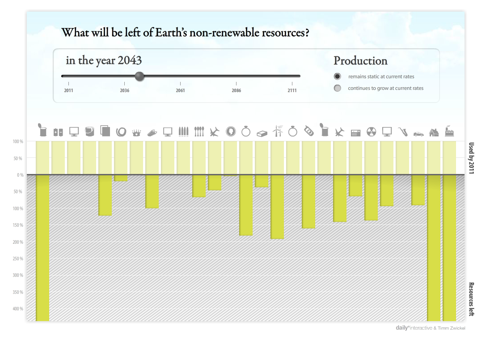

What will be left of Earth's non-renewable resources?
My choice of visualization
I picked the infographic from the shortlisted entries to "Information is Beautiful Monthly Challenges" Challenge 1.
The challenge required participants to visualize data on Earth's non-renewable resources. The resources for the challenge were available at http://bit.ly/stockcheck2.
I liked the visualization by Kay Schröder and Timm Zwickel and decided to recreate it using ExtJS4.
Here is what Schröder and Zwickel designed (image shown below):

and here is what I created (you can interact with this):
Main Takeaway
Most non-renewable resources in this dataset will be depleted in the next 50 years if production continues at current rates. If the prodcution grows at current rates, it will happen sooner in the next 25 years. Of all fossil fuels, coal will last the longest and
amongst precious metals, it is Platinum. Aluminium deposits though ubundant, will last for a very long time only if production continues at current rates. In the event Aluminium production increases
at the current growth rate, then it will get over much sooner, in the next 81 years. Also, metals like Chromium, Indium, Lead and Zinc which are raw materials for a large
number of electronic gadgets and appliances that we use/rely on heavily will be depleted very soon and there is an urgent need to find their alternatives.
Challenges with dataset
I really did not have any difficulty in understanding the dataset as it is very well commented (the data set is in form of an excel spreadsheet). The math for arriving at estimates though not
directly provided in the spreadsheet, can be calculated. However, this maybe done only to verify the validity of the claims made in the spreadsheet regarding estimated year of
depletion of each resource.
Assumptions carried over from original visualization
The visualization created by Schröder and Zwickel assumes no recycling of any resources in both scenarios and I have stuck to that in my visualization too. Also, the time frame
for visualization has been kept same, i.e. 100 years from 2011 to 2111. Like the original visualization, for my visualization too a slider remains the primary mode of interaction.
Comparison with the original visualization
While some deviation from original visualization was intentional, a few changes are an artifact of the limitations of the visualization toolkit ExtJS4.
Single versus Dual View
In the original visualization, the user was given an option to choose between the two production scenarios, viz. no increase in current prodction rate and increase in production rate as per current trend. The visualization remodeled itself
on the fly based on the option the user selected.
In my visualization, I have disintegrated the two scenarios into two views. Based on the slider movement, each of the visualizations redraws itself to reflect the current values. This way the user can instantly compare
the values for a particular resource in each of the scenarios.
Y-axis
The Y-axis in the original visualization was quite confusing. First of all, the axis extened in both directions (top and bottom)
with positive values. Moreover, any animation was visible in the lower portion only. Thus it was safe to assume that the portion of Y-axis above X-axis was
for some kind of representation and could be ignored. The other difficulty with the original visualization was the calculation of "Resources Left Percentage". I really
couldn't understand what greater than 400% meant, or for that matter what 400% meant. Also, few resources stay above this level
for quite sometime before suddenly dropping. After many hours of playing with the visualization, I was finally able to figure out
that the portion of the axis below X-axis represented figuratively that the resources get depleted as they are mined. The percentage was used to
represent how much of the resource was still available expressed as a percentage with respect to its value in 2011. However there was no scaling
applied and hence there was this discrepancy in resources left percentage values.
In my visualization I corrected this by scaling the percentage values. Hence all values range from 0 to 100, where 100% means as many resources left as in 2011 and 0% means all have been consumed. After applying this
correction, we can visualize depletion of Aluminium, Coal and Gas also along with other resources since beginning and not just suddenly mid-way into the visualization as is the case with the original visualization.
-
Additional labels
In my visualization I also added additional labels which show how many years are left before a resource is
depleted, or in the case the resource was depleted, when and how long ago it was depleted.
This supplements the tooltip which is also visible when hovered over a resource. The idea was to present information
to user without him having to look for it.
Labels instead of Images - ExtJS4 limitation
ExtJS4 doesn't allow overriding labels with HTML and I was thus stuck with using text labels. On another note, I think this made it easier
for a user to comprehend what each column in the graph represented.
Straight Y-axis - ExtJS4 limitation
While ExtJS3 had an option to draw reversed charts, where the Y-axis starts from 0 on top where it meets X-axis and goes all the way down,
ExtJS4 doesn't support it. This is a known bug. I tried to work around this and this is what I obtained:
Though the animation is now similar to the one in original visualization, the Y-axis reads negative values. Since Y-axis is treated as
numberical data used to create the graph, it is not possible to replace it with equivalent text labels. I thus decided to keep the one with straight axis.
(Both visualizations are functional though).
Jerky animation - ExtJS4 limitation
Though ExtJS4 provides slider control, it is not optmized for use in modifying datasets. Sencha anticipates use
of slider control for UI control to provide feedback input like changing of volume in a multimedia application or selecting a value as an option in
form filling rather than for filtering data and transforming charts. Also, ExtJS4 relies on a proprietory data model for data manipulation and expects all data fed into
the framework for visualization in this format. Though this format is closer to JSON in representation, its properitory nature and lack of sufficient implementation and testing
raises doubts on its efficiency.
Every time the slider is moved, it triggers a transformation on the data and since this transformation doesn't occur in time, jerky motion/update is experienced. By slowing the
rate of sliding, we can reduce the number of updates performed in a short period of time and thus achieve better user experience.
Impressions about the toolkit
My obvious first choice for the assignment was JIT since I already knew it, but it would have defeated the purpose of the assignment and learning something new. I thus decided to go with Flare instead. However, after weeks of really difficult periods of "trying to learn"
ActionScript, I decided to change my toolkit and chose ExtJs4. I found ExtJS4 to be a very powerful toolkit primarily focussing at creating desktop-like interfaces for the web (most official documentation and examples also tend to hint towards this). ExtJS4 has been
developed as a part of larger cross platform development environment by Sencha and is more on the lines of a framework rather than just a toolkit.
Sencha provides an excellent "Getting Started" documentation and ample resources to understand the framework in depth easily. This ease and comfort however ends here. I found the documentation of the classes and methods to be
inadequate. Most explanation is given in a short paragraph of few lines with often no examples. The user is left to learn by trial and error and guess work. I had tough time getting the slider and
the column chart in one single pane as they would just not fit together as children of widget.panel. I had to use Form.panel as parent container instead to get it running - something which is not
documented.
I realized that Sencha forums are not an excellent resource for your queries and should not be your first stop for answers, digging into examples or even Stack Overflow can help instead.
The framework is also quite rigid when it comes to working with styles and themes. ExtJs4 relies completely on SVG for rendering of the graph, but sprites have either not been implemented properly in this version or the
functionality is breaking so many updates need to be done through external CSS.
The toolkit requires moderate learning effort from the user and it can be rated 6 on an ease scale of 1-10 where 1 is hardest and 10 is easiest. Compare this to Prefuse and Flare which I would rate 2/3 on the same scale.
Altogether, I found it fun to use this toolkit.